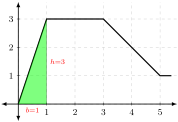

\begin{equation*}
\intdx{f(x)} \text{ means "find the antiderivative of" } f(x)
\end{equation*}
We called this the indefinite integral of \(f(x)\text{.}\)
In Application 16.7, we saw that this notation arises from the connection between marginal cost and item cost, and the fact that summing the intem cost over a range gives you the change in total cost.
In this section, we will study this and related applications. We begin with the following definition.
Definition17.1.
Suppose that \(F(x)\) is any antiderivative of \(f(x)\text{,}\) and that \(a,b\) are constant numbers. Then we define
we must first find an antidervivative of. It is not difficult to see that one antiderivative of \(f(x) = 36x + 42\frac{1}{x}\) is \(F(x) = 36\frac{1}{2}x^2 + 42\ln(|x|)\text{.}\)
In Section 17.2, we will discuss the exact meaning and intricacies of the phrase the net area between \(f\) and the \(x\) axis on the interval \([a,b]\). For now, the following illustration should suffice to show its general meaning.
We will talk about why this theorem is true in Section 17.3. For now, we will focus on computations and some preliminary applications.
Exploration17.3.
(a)
Let \(f(x) = 15x^2 + 2\) describe the height of a mountain.
Find the net area between \(f\) and the \(x\)-axis over the interval \([1,2]\text{.}\)
Graphically, we have computed the area of the shaded region below:
Section17.2Understanding Geometrically of Area
In this course, our primary applications have come from macroeconomics, accounting and finance, and management. But the tools of calculus apply to a much broader set of applications.
For example, suppose that you are selling a plot of land enclosed between a stream and a road. From comparable recent sales, you know that the value of the land is $12,800,000 $ per square mile. You want to know how much your land is worth. You already know that
\begin{equation*}
\text{(value)} = \text{(area)} \times \text{(price per unit area)}\text{.}
\end{equation*}
To get a numerical value, you need to be able to compute the area enclosed.
For triangles and squares, computing area is easy.
The area of a triangle is \(\frac{1}{2}\cdot b\cdot h\)
The area of a rectangle is \(b\cdot h\)
For other shapes, computing area is much more complex, and often requires more powerful mathematical tools. Translating our real estate question into mathematical language gives the following picture:
In this new language,
The river is modeled by the function \(\blue{y=f(x)}\text{.}\)
The road is modeled by the \(x\)-axis.
The lot lines are represented by the lines \(\red{x=a}\) and \(\red{x=b}\)
In this langage, we want the area enclosed between \(\blue{f(x)}\) and the \(x-axis\) on the interval \(\red{[a,b]}\).
\begin{equation*}
\intdx{_a^b \, f(x) \, } = \text{net area enclosed between } f(x) \text{ and } x\text{-axis over }[a,b]
\end{equation*}
But here, since we do not have an equation for the function, we must compute the area directly using geometry.
Exploration17.4.
Let \(f(x)\) be defined by the graph below
(a)
Compute the net area between \(f\) and the \(x\)-axis on the interval \([0,1]\)
Solution.
The first step is to identify and shade the region described. Moving between \(x=0\) and \(x=1\text{,}\) the area region enclosed on the top by \(f(x)\) and the bottom by the \(x\)-axis is a triangle with base \(b=1\) and height \(h=3\text{.}\)
This region has height
\begin{equation*}
\text{area of triangle} = \frac{1}{2} b h = \frac{1}{2} \cdot 1 \cdot 3 = 1.5
\end{equation*}

(b)
Compute the net area between \(f\) and the \(x\)-axis on the interval \([1,3]\)
Solution.
The first step is to identify and shade the region described. Moving between \(x=1\) and \(x=3\text{,}\) the area region enclosed on the top by \(f(x)\) and the bottom by the \(x\)-axis is a rectangle with base \(b=2\) and height \(h=3\text{.}\)
This region has area
\begin{equation*}
\text{area of rectangle} = b h = 2 \cdot 3 = 6
\end{equation*}
(c)
Compute the net area between \(f\) and the \(x\)-axis on the interval \([3,4]\)
Solution.
The first step is to identify and shade the region described. Moving between \(x=1\) and \(x=3\text{,}\) the area region enclosed on the top by \(f(x)\) and the bottom by the \(x\)-axis is a trapeziod.
There is a formula for the area of a trapezoid, but it is easier and more flexible to just break up the shaded region into two parts: a triangle and a rectangle.
The triangular piece has height \(h=\Delta y = 3-2=1\) and base \(b=\Delta x = 4-3=1\text{.}\) Thus, the trianglar piece has area\(\frac{1}{2} b h = \frac{1}{2} \cdot 1\cdot 1 = 0.5 \)
The rectangular piece has height \(h=\Delta y = 2-0=2\) and base \(b=\Delta x = 4-3=1\text{.}\) Thus, the rectangular piece has area\(b\cdot h= 2 \cdot 1 = 2\)
Therefore, the area of the entire enclosed region is \(0.5 + 2 = 2.5\)
We have now seen several examples that help explain what it means to talk about area enclosed between a function and the \(x\)-axis. But what does net area mean? To explore this, we need to switch to a new metaphor.
In the image below, suppose that \(\green{f(x)}\) is the height of land at position \(x\text{,}\) and that the \(\blue{x\text{-axis}}\) is the water level.
There are two parts of this graph
When \(f\) is positive, then the ground is above the water. In this case, dry land is the region enclosed between \(f\) and the \(x\)-axis
In this case, we say that \(f\) encloses positive net area.
When \(f\) is negative, then the water is above the ground. In this case water is the region enclosed between \(f\) and the \(x\)-axis
In this case, we say that \(f\) encloses negative net area.
More precisely, we make the following definition
Definition17.3.
Suppose that you are given any function \(y=f(x)\text{,}\) and two \(x\) values \(a,b\text{.}\) Let \(R\) represent the region enclosed between \(f\) and the \(x\)-axis on the interval \([a,b]\)
The absolute area of the region \(R\) is the area you treat the region as a geometric figure, and ignore the calculus setting of the question.
If the region \(R\) is entirely above the \(x\)-axis, then the region has positive net area equal to its absolute area.
If the region \(R\) is entirely below the \(x\)-axis, the region has negative net area equal to the negation of its absoulte area.
If the region \(R\) is sometimes above and sometimes below the \(x\)-axis, you must divide it into separate components, find their net area, and then add them together.
This definition is wordy, but fairly simple to apply in practice.
Exploration17.5.
Suppose that \(f(x)\) is given by the graph below. In addition to the function, the absolute areas of several regions are indicated.
(a)
Find \(\displaystyle\intdx{_0^3 f(x) }\)
Solution.
Between \(x=0\) and \(x=3\text{,}\) the function \(f(x)\) is entirely above the \(x\)-axis. That means that the net area of the region that it encloses is positive.
We are given that the absolute area of this first region is 1.8. It follows that
Between \(x=3\) and \(x=6\text{,}\) the function \(f(x)\) is entirely below the \(x\)-axis. That means that the net area of the region that it encloses is negative.
We are given that the absolute area of this second region is 3.4. It follows that
\(f\) crosses the \(x\) axis between \(x=0\) and \(x=6\text{.}\) To find the net area enclosed on this interval, we must divide the function into the region between \(0\lt x \lt 3\text{,}\) where \(f\) is entirely positive, and the region \(3\lt x\lt 6\text{,}\) where \(f\) is entirely negative. We can then compute
We want to find the area enclosed between the curve and the \(x\)-axis.
First, shade the area enclosed by following the curve, and drawing lines toward the \(x\)-axis. Then, identify the part of the enclosed area that corresponds to \(0\lt x \lt 1\) as in the following image.
The shaded area is a triangle with base \(b=1\) and height \(h=1\text{.}\) The region enclosed is above the \(x\)-axis so it has positive net area. Putting this together,
We want to find the area enclosed between the curve and the \(x\)-axis.
First, shade the area enclosed by following the curve, and drawing lines toward the \(x\)-axis. Then, identify the part of the enclosed area that corresponds to \(0\lt x \lt 2\) as in the following image.
The shaded area is triangle with base \(b=2\) and height \(h=1\text{.}\) The region enclosed is above the \(x\)-axis so it has positive net area. Putting this together,
We want to find the area enclosed between the curve and the \(x\)-axis.
First, shade the area enclosed by following the curve, and drawing lines toward the \(x\)-axis. Then, identify the part of the enclosed area that corresponds to \(0\lt x \lt 4\) as in the following image.
The shaded area can be divided into three regions:
A triangle with base \(0\lt x\lt 2\) (\(b=2\)) and height \(h=1\)above the \(x\)-axis.
A triangle with base \(2\lt x\lt 3\) (\(b=1\)) and height \(h=1\)below the \(x\)-axis.
A rectangle with base \(3\lt x \lt 4\) (\(b=1\)) and height \(h=1\)below the \(x\)-axis.
We want to find the area enclosed between the curve and the \(x\)-axis.
First, shade the area enclosed by following the curve, and drawing lines toward the \(x\)-axis. Then, identify the part of the enclosed area that corresponds to \(0\lt x \lt 4\) as in the following image.
The shaded area can be divided into five regions:
A triangle with base \(0\lt x\lt 2\) (\(b=2\)) and height \(h=1\)above the \(x\)-axis.
A triangle with base \(2\lt x\lt 3\) (\(b=1\)) and height \(h=1\)below the \(x\)-axis.
A rectangle with base \(3\lt x\lt 4\) (\(b=1\)) and height \(h=1\)below the \(x\)-axis.
A triangle with base \(4\lt x\lt 5\) (\(b=1\)) and hieght \(h=1\)below the \(x\)-axis
A triangle with base \(5\lt x\lt 6\) (\(b=1\)) and height \(h=1\)above the \(x\)-axis
So far, we have seen the notation \(\intdx{_a^b f(x)}\) in two very different contexts: antiderivatives and geometric area. But why are these concepts connected?
We have already seen the foundational idea: given a complex area we have sliced it into small regions, where we can find the area of each slice more easily.
Suppose you are given any curved function \(f\) an enclosed area you want to compute as below.
Slicing the shaded region into thin, vertical strips gives the image below on the left.
Notice that if the function is continuous (doesn’t jump) and if the strips are thin enough, each strip will approximately be a rectangle with height \(h = f(x)\) and base \(b=\Delta x\text{.}\) This is illustrated in the image above on the right.
The area of one strip will be approximately \(h\cdot b = f(x) \cdot \Delta x\text{.}\)
The area of the whole region is approximately the Sum of all slices from \(x=a\) to \(x=b\text{.}\) Mathematically, this is written
\begin{align*}
\text{area of whole} \amp \approx \text{Sum of slices from} a \text{ to } b\\
\amp \approx \text{Sum of } f(x)\cdot \Delta x \text{ from } a \text{ to } b
\end{align*}
To emphasize that the slices are very thin, we replace the blocky \(\Delta x\) with a smooth \(dx\text{,}\) and we summarize the word "Sum" with the symbol \(\int\)
\begin{align*}
\amp \approx \text{Sum of } f(x)\cdot dx \text{ from } a \text{ to } b\\
\amp \approx \intdx{_a^b f(x) }
\end{align*}
Section17.3Area, Antiderivatives, and Graphs of Change
Theorem17.5.The Fundamental Theorem of Calculus (FTC).
Suppose that \(f(x)\) is any continuous function, and that \(F(x)\) is any antiderivative of \(f(x)\text{.}\) Then the net area enclosed between \(f\) and the \(x\)-axis on the interval \([a,b]\) is given by
In other words, antiderivatives give net area, and net area gives antiderivatives. Given the many connections between derivatives and concepts in economic and business, this becomes a powerful set of tools.
The derivative of total cost \(C\) is the marginal cost \(C'\text{.}\)
Therefore, the total cost \(C\) is an antiderivative of marginal (item) cost \(C'\text{.}\)
It follows that the area under marginal (item) cost gives change in total cost.
Let \(f(x)\) give the value of a stock on day \(x\text{.}\) Then the derivative of value \(f'\) tells you how fast the value is changing on each day.
Therefore, the value function \(f\) is an antiderivative of the change in value function \(f'\text{.}\)
It follows that the area under the change in value function cost gives the change in actual value.
This line of reasoning extends to any and all graphs of rates of change.
Exploration17.7.
The graph of the daily change \(V'(x)\) (in $/day) in the price of a certain stock is given below.
(a)
Find the change in stock price \(V\) between days 1 and 5.
Solution.
Recall that the total value \(V\) is the antiderivative of the change in value function \(V'\text{.}\) By Theorem 17.5, the area under \(V'\) is equal to the net change in \(V\text{.}\) Looking at the graph of \(V'\text{,}\) we see
Day 1
Between day 1 and 2, the area enclosed by \(V'\) is a rectangle with height \(h=3\) and base \(b=1\text{.}\) That means the value increases by \(3\cdot 1= 3\)$ between day 1 and 2.
Day 2
Between day 2 and 3, the area enclosed by \(V'\) is a rectangle with height \(h=1\) and base \(b=1\text{.}\) That means the value increases by \(1\cdot 1 = 1\)$ between day 2 and 3.
Day 3 & 4
Between day 3 and 5, the area enclosed by \(V'\) is a rectangle with height \(h=-1\) and base \(b=2\text{.}\) That means the value increases by \((-) 1\cdot 2 = -2 \)$ between day 3 and 5.
Putting it together, the change in value between day 1 and 5 equals
Find the change in stock price between days 1 and 7.
Solution.
Recall that the total value \(V\) is the antiderivative of the change in value function \(V'\text{.}\) By Theorem 17.5, the area under \(V'\) is equal to the net change in \(V\text{.}\) Looking at the graph of \(V'\text{,}\) we see
Day 1
Between day 1 and 2, the area enclosed by \(V'\) is a rectangle with height \(h=3\) and base \(b=1\text{.}\) That means the value increases by \(3\cdot 1= 3\)$ between day 1 and 2.
Day 2
Between day 2 and 3, the area enclosed by \(V'\) is a rectangle with height \(h=1\) and base \(b=1\text{.}\) That means the value increases by \(1\cdot 1 = 1\)$ between day 2 and 3.
Day 3 & 4
Between day 3 and 5, the area enclosed by \(V'\) is a rectangle with height \(h=-1\) and base \(b=2\text{.}\) That means the value increases by \((-) 1\cdot 2 = -2 \)$ between day 3 and 5.
Day 5
Between day 5 and 6, the area enclosed by \(V'\) is a rectangle with height \(h=-4\) and base \(b=1\text{.}\) That means the value increases by \((-) 4\cdot 1 = -4 \)$ between day 5 and 6.
Day 6
Between day 6 and 7, the area enclosed by \(V'\) is a rectangle with height \(h=-1\) and base \(b=1\text{.}\) That means the value increases by \((-) 1\cdot 1 = -1 \)$ between day 6 and 7.
Putting it together, the change in value between day 1 and 7 equals
Find the change in stock price between days 5 and 8.
Solution.
Recall that the total value \(V\) is the antiderivative of the change in value function \(V'\text{.}\) By Theorem 17.5, the area under \(V'\) is equal to the net change in \(V\text{.}\) Looking at the graph of \(V'\text{,}\) we see
Day 5
Between day 5 and 6, the area enclosed by \(V'\) is a rectangle with height \(h=-4\) and base \(b=1\text{.}\) That means the value increases by \((-) 4\cdot 1 = -4 \)$ between day 5 and 6.
Day 6
Between day 6 and 7, the area enclosed by \(V'\) is a rectangle with height \(h=-1\) and base \(b=1\text{.}\) That means the value increases by \((-) 1\cdot 1 = -1 \)$ between day 6 and 7.
Day 7
Between day 7 and 8, the area enclosed by \(V'\) is a rectangle with height \(h=4\) and base \(b=1\text{.}\) That means the value increases by \((+) 4\cdot 1 = 4 \)$ between day 7 and 8.
Putting it together, the change in value between day 5 and 8 equals
Suppose the stock price on day 1 was $10. Find the stock price at day 5.
Solution.
We have already seen that the value of the stock changes by $+2 between days 1 and 5. If the value on day 1 was $10, then the value on day 5 is $10+(+2) = $12.
(e)
Suppose the stock price on day 1 was $10. Find the stock price at day 7.
Solution.
We have already seen that the value of the stock changes by $-3 between days 1 and 7. If the value on day 1 was $10, then the value on day 5 is $10+(-3) = $7.